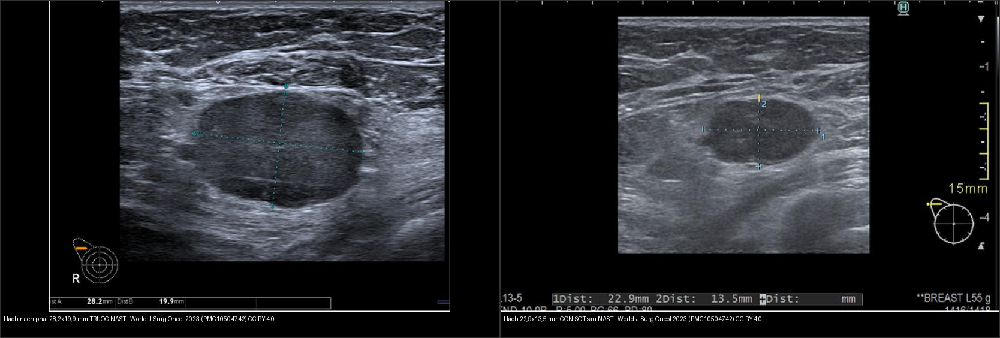
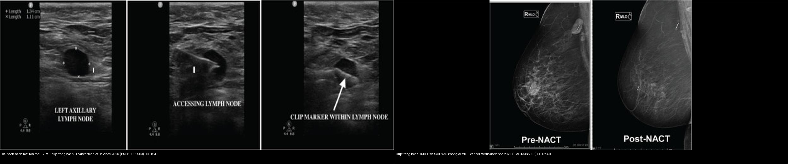
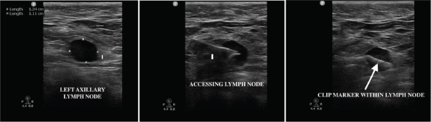
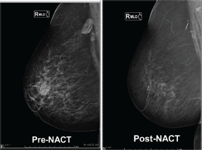
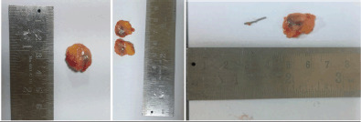
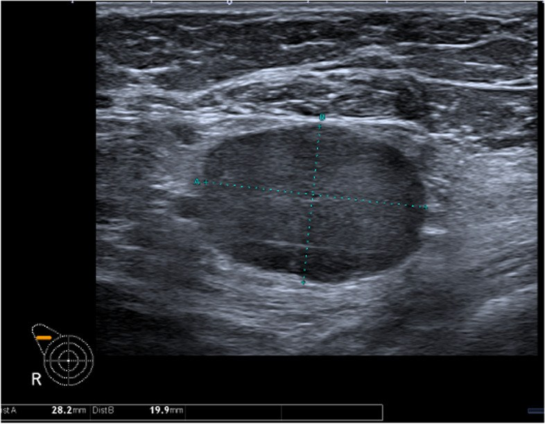
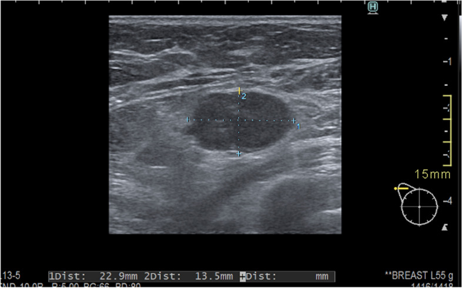

589 — Sinh thiết hạch gác nách & sinh thiết hạch được nhắm (TAD) sau hóa trị tân bổ trợ: clip hạch, dual tracer, OSNA / Sentinel lymph node biopsy & targeted axillary dissection after NAC
Tags: pattern:hach-nach pattern:clip-hach vung:hach-nach vung:vu score:ACOSOG-Z0011 score:AMAROS protocol:SLNB protocol:US-hach-nach incidentaloma:clip-di-tru
Mức chắc chắn (certainty): tổng hợp y văn (literature synthesis) — tự biên từ y văn mở (meta-phân tích TAD, thử nghiệm mốc Z0011/AMAROS/Z1071, ca kỹ thuật clip) kèm ca nguyên văn trên siêu âm trước–sau NAST (Pislar 2023) và ca titanium clip (Krishna 2026); số liệu đều lấy trực tiếp từ bài gốc.
1. Tổng quan bệnh học – cơ chế hình ảnh
- Vì sao phải đánh giá nách: di căn hạch nách là yếu tố tiên lượng mạnh nhất của ung thư vú; nhưng nạo hạch nách (axillary lymph node dissection — ALND) gây phù bạch mạch tay (lymphedema) tới ~20–25% (AMAROS 5 năm: 24,5% sau ALND so với 11,9% sau xạ nách). Vì vậy đích hiện đại là giảm leo thang (de-escalation): chọn đúng người không cần ALND.
- Ba mức nách Berg: mức I (dưới–ngoài cơ ngực bé), mức II (sau cơ ngực bé, gồm hạch Rotter), mức III (trên–trong cơ ngực bé, dưới–trong tĩnh mạch dưới đòn). Bạch mạch tuyến vú dẫn trước hết về mức I; thứ tự này là cơ sở để "hạch gác" (sentinel node) đại diện nách.
- TẠI SAO có "hạch gác": hạt 99mTc-sulfur colloid / albumin nanocolloid (kích thước ~0,1–1 µm) được đại thực bào (macrophage) thực bào giữ lại tại hạch gác đầu tiên; thuốc xanh (blue dye — patent blue/methylene blue) đi theo bạch mạch và nhuộm hạch trong 5–10 phút; ICG (indocyanine green) phát huỳnh quang hồng ngoại quan sát bằng camera chuyên dụng. Đây là lý do phải tiêm trước khi rạch da để dẫn lưu chưa bị xáo trộn.
- TẠI SAO "dual tracer": một chất có thể bỏ sót hạch gác ở ngoài cùng đường dẫn → dùng 2 dấu (phóng xạ + xanh/ICG). ACOSOG Z1071: tỷ lệ âm tính giả (FNR) chung 12,6% → 10,8% khi dùng dual tracer, và giảm tiếp khi lấy ≥ 2 hạch gác. SLNB kinh điển (cN0) gộp: nhận diện 96%, độ nhạy 93%, độ chính xác 99%, FNR 5–6% — ngưỡng FNR chấp nhận được là ≤ 10%.
- Vì sao phải "đánh dấu hạch" trước hóa trị: ở bệnh nhân cN+ đã chuyển yN0, sau hạch trị tân bổ trợ (neoadjuvant chemotherapy — NAC) hạch di căn có thể teo xơ tới mức không còn ngấm thuốc/không còn thấy trên siêu âm, trong khi hạch này không phải lúc nào cũng là hạch gác (chỉ ~70% trùng nhau). Người ta đặt một clip kim loại vào hạch đã chứng minh di căn trước NAC; TAD (targeted axillary dissection) = SLNB (dual tracer) + lấy hạch có clip.
- Định lượng TAD (meta 59 nghiên cứu, Abdelaziz 2026, NPJ Breast Cancer): nhận diện hạch đánh dấu 95,1% (KTC 95% 93,2–96,5); FNR 6,37% (5,02–8,04); độ chính xác 94,68%; trùng hạch đánh dấu–hạch gác 73,34% — các phương tiện đánh dấu (clip, carbon, magnetic, hạt phóng xạ) và định vị (wire, phóng xạ, từ, siêu âm) tương đương nhau.
- TẠI SAO clip vẫn thấy sau NAC: clip titanium (Ligaclip) không tan theo thời gian, không từ tính → không gây nhiễu MRI và giữ nguyên vị trí trong hạch; một số ca clip di trú (clip migration/displacement) theo đường bạch mạch sau sinh thiết. Krishna 2026 (n = 28): nhận diện hạch clip 100%, hạch trung bình 20 mm, trùng hạch gác 92,5%, không thấy di trú.
- Định lượng siêu âm nách (axillary ultrasound — AUS):
- Trước điều trị, cN0: độ nhạy chỉ 42,4% (KTC 36,8–48,2), độ đặc hiệu 80,8%, PPV 51,3%, NPV 74,7% (Mun 2025) — AUS âm không loại trừ di căn vi thể.
- Sau NAC, cN+: độ nhạy 68%, độ đặc hiệu 76%, độ chính xác 72%, PPV 78%, NPV chỉ 66%; âm tính giả tới ~25% (Albasini 2026) → không dùng AUS đơn thuần để quyết định bỏ ALND.
2. Mẫu hình + chẩn đoán phân biệt theo vị trí (Gamut)
- Hạch gác bình thường: hình bầu dục/hạnh nhân, rốn mỡ sáng (fatty hilum), vỏ mỏng đều. Tiêu chuẩn bình thường: trục dài > trục ngắn, vỏ ≤ 3 mm, còn rốn mỡ.
- Hạch nghi ngờ/di căn (trên AUS): vỏ dày khu trú hoặc lan tỏa > 3 mm, mất rốn mỡ, hình tròn, mất ranh giới vỏ–mô mỡ, hoặc nhiều hạch dính thành đám (matted) → chọc hút kim nhỏ/sinh thiết lõi (FNA/core) hạch nghi nhất.
- Gamut theo bối cảnh (quan trọng nhất):
- Chưa điều trị (cN0): hạch phản ứng/viêm (do nhiễm trùng, sau tiêm vaccine, mèo cào), lao hạch, lymphoma, di căn từ cơ quan khác (Krukenberg, melanoma, phổi) — hình dạng gần giống nhau, bối cảnh + sinh thiết quyết định.
- cN+ trước NAC: di căn vú (vỏ > 3 mm ± mất rốn) → đánh dấu clip.
- Sau NAC (yN0 sau lâm sàng): phân biệt hạch còn u sống (residual viable tumour) vs hạch xơ hóa/hoại tử sau điều trị (treated node) — KHÔNG phân biệt được chỉ bằng kích thước; AUS giảm độ nhạy sau NAC, phải lấy hạch đã đánh dấu.
- Cạm bẫy "hạch to còn lại": hạch vẫn to nhưng đã âm tính mô bệnh (xơ, mỡ hóa, chất keo) → nạo nách oan; ngược lại hạch nhỏ lại mà vẫn còn vi di căn.
- Gợi nhớ tiếp cận nách 4 bước: (1) Bản đồ dẫn lưu (mức I→II→III, có vú trong không) → (2) hình thái hạch (vỏ/rốn/kích thước) → (3) xác nhận mô bệnh (FNA/core, OSNA) → (4) chiến lược (SLNB đơn thuần, TAD, ALND hay xạ nách).
3. Bảng so sánh phân biệt (ma trận đối chiếu)
| Thực thể (entity) | Hình ảnh điển hình | Chốt vào (rule-in) | Chốt loại (rule-out) | Gợi ý xác nhận |
|---|---|---|---|---|
| Hạch nách lành | Bầu dục, vỏ ≤ 3 mm, còn rốn mỡ | Rốn mỡ rõ + vỏ mỏng ≤ 3 mm | Mất rốn + vỏ > 3 mm → nghi di căn | Theo dõi; không chọc khi không nghi |
| Hạch di căn trước điều trị | Vỏ dày > 3 mm, mất rốn mỡ, hình tròn, ± dính đám | Vỏ > 3 mm khu trú + mất rốn mỡ | Rốn mỡ còn rõ + vỏ ≤ 3 mm → ít nghĩ di căn | FNA/core hạch nghi nhất + đặt clip trước NAC |
| Hạch tồn dư sau NAC | Hạch còn vỏ dày/mất rốn dù đã nhỏ lại | Kích thước còn > 3 mm bất thường trên AUS | Nhỏ lại và trở về bình thường không loại trừ vi di căn | Lấy đúng hạch đã clip (TAD) — mô bệnh mới chốt được |
| Hạch xơ hóa sau điều trị | Hạch to nhưng mô bệnh âm, xơ/mỡ hóa/chất keo | Mô bệnh: không tế bào u sống | Có tế bào u sống → còn bệnh | OSNA/H&E — không dựa hình ảnh để chốt |
| Clip hạch (định vị) | Nốt tăng đậm độ/đậm âm trong hạch ± vệt kim; X-quang giữ nguyên qua NAC | Cùng vị trí so phim trước NAC | Xê dịch ≥ 5 mm → nghi di trú (theo dõi) | X-quang vú/định vị bằng siêu âm trong mổ |

Trái: hạch nách phải 28,2 × 19,9 mm, mất rốn mỡ, trước NAST. Phải: hạch 22,9 × 13,5 mm CÒN SÓT sau NAST — nhỏ hơn nhưng chưa trở về bình thường, phải lấy đúng hạch để biết còn u sống hay chỉ xơ hóa. Nguồn: World J Surg Oncol 2023 (PMC10504742), CC BY 4.0. Ảnh ghép letterbox.
Trái: US hạch nách — kim tiếp cận hạch, clip trong hạch (mũi tên). Phải: X-quang lúc đặt và sau NAC cho thấy clip giữ nguyên vị trí, không di trú. Nguồn: Ecancermedicalscience 2026 (PMC13365963), CC BY 4.0. Ảnh ghép letterbox.Trùng nhau giữa hạch đánh dấu và hạch gác (vì sao cần TAD chứ không chỉ lấy clip)
- Chỉ lấy hạch có clip là chưa đủ: hạch clip chỉ là hạch gác ở ~70–73% ca (meta: trùng 73,34%; Krishna: 92,5% — dao động theo cách chọn colon). Phải kết hợp SLNB dual tracer + hạch clip để không bỏ sót bệnh ngoài hạch clip.
- FNR thấp nhất đạt được khi: dual tracer + lấy ≥ 2–3 hạch gác + lấy đúng hạch clip; đó là lý do TAD trở thành chuẩn cho cN+ xuống yN0 sau NAC.
4. Protocol chụp + hệ phân độ/điểm chuẩn hóa
- Siêu âm nách (đầu tay): đầu dò thẳng ≥ 12 MHz, bệnh nhân nằm ngửa, duỗi–dạng tay để lộ nách; quét mức I–II–III, đo vỏ dày nhất và ghi mm; nghi ngờ → FNA/core hạch nghi nhất rồi đặt clip vào hạch đó trước NAC.
- Đặt clip: theo hệ trục giao (coaxial) bằng kim 14–18G; clip titanium hoặc seed từ (Magseed)/hạt phóng xạ; ghi tọa độ + ảnh làm mốc. X-quang vú kiểm tra clip ngay sau đặt (2 bình diện).
- Hóa trị tân bổ trợ (NAC) theo subtype (HER2+/TN hay đạt pCR hạch nhất).
- Đánh giá lại trước mổ: AUS + lâm sàng (yN0 vs yN+); MRI vú khi cần (bài 514/515). Lưu ý AUS sau NAC chỉ đạt độ chính xác 72%, NPV 66% → không đủ để bỏ nách.
- Trong mổ (TAD): SLNB dual tracer — 99mTc-nanocolloid + xanh hoặc ICG; định vị hạch clip bằng siêu âm trong mổ, dây kim (wire), seed phóng xạ/từ, hoặc xăm carbon (carbon tattoo); lấy hạch clip + các hạch gác; một số nơi dùng OSNA (one-step nucleic acid amplification — CK19 mRNA) để có kết quả tức thì, đặc biệt nhạy vi di căn.
- Hệ thống phân độ/tiêu chuẩn:
- AJCC/UICC 8th — pN sau điều trị (ypN): ypN0(i+) = tế bào đơn lẻ/ổ ≤ 0,2 mm / < 200 tế bào**; **ypN1mi** = vi di căn **> 0,2–2,0 mm / 200–2.000 tế bào; ypN1 = 1–3 hạch nách; ypN2 = 4–9; ypN3 = ≥ 10 (hoặc hạch vú trong/thượng đòn cùng bên).
- ACOSOG Z0011 — tiêu chí bỏ ALND: T1–T2, cN0, phẫu thuật bảo tồn (BCS), ≤ 2 hạch gác dương, có xạ toàn vú, ≥ 5 năm theo dõi; nhánh bỏ ALND có OS 5 năm 98,5% vs 95,2% và DFS 97,0% vs 94,4% (không khác biệt), không tăng tái phát vùng.
- AMAROS — hạch gác dương, muốn tránh ALND: xạ nách thay ALND cho kiểm soát vùng và sống còn tương đương, phù tay ít hơn; (bảng tổng quan: tái phát nách 10 năm 0,93% ALND vs 1,82% xạ nách; OS 10 năm 81,4% vs 81,0%; phù 5 năm 24,5% vs 11,9%).
- SENOMAC / POSNOC: củng cố bỏ ALND an toàn ở 1–2 hạch gác có đại thể (macrometastasis) với xạ ± điều trị toàn thân.
flowchart TD
A[Ung thu vu, danh gia nach] --> B{AUS + FNA/core}
B -->|Hach nghi di can = cN+| C[Dat CLIP vao hach di can]
C --> D[NAO? Khong: Hoa tri tan bo tro NAC]
D --> E[Danh gia lai: AUS + lam sang]
E --> F{Con nghi yN+ hay khong chac?}
F -->|Co / khong chac| G[TAD: SLNB dual tracer + lay dung hach CLIP]
F -->|Khong| G
G --> H{Mô bệnh / OSNA}
H -->|ypN0 hoac ypN0 i+| I[Bo ALND - theo doi]
H -->|1-2 hach duong, du tieu chuan Z0011| J[Bo ALND + xa toan vu]
H -->|Nhieu hach duong / khong du tieu chuan| K["Xa nach (AMAROS) hoac ALND"]
B -->|Hach binh thuong cN0| L[SLNB dual tracer]
L --> M{SLN duong?}
M -->|Khong| I
M -->|Co 1-2 hach| J
- Bảng ngưỡng xử trí nhanh:
| Tình huống | Ngưỡng / tiêu chuẩn | Xử trí |
|---|---|---|
| AUS hạch bình thường | Vỏ ≤ 3 mm, còn rốn mỡ | Không chọc; SLNB khi mổ |
| AUS hạch nghi | Vỏ > 3 mm hoặc mất rốn mỡ | FNA/core + đặt clip |
| Sau NAC | AUS giảm nhạy, NPV 66% | Không bỏ nách chỉ vì AUS âm |
| SLN dương 1–2 hạch, Z0011 | T1–T2, BCS, xạ toàn vú | Bỏ ALND |
| SLN dương, không đủ Z0011 | Bất kỳ | Xạ nách (AMAROS) hoặc ALND |
| Lấy hạch clip | Detect 95,1%, FNR 6,37% | TAD = SLNB + hạch clip |
5. Biến thể bình thường và cạm bẫy
- Hạch "phản ứng" sau tiêm vaccine/nhiễm trùng có thể vỏ dày > 3 mm → dương tính giả trên AUS; đối chiếu bệnh sử.
- AUS âm tính giả trước mổ tới ~58% (độ nhạy 42,4%) và sau NAC ~32% → không bao giờ "yên tâm" chỉ vì AUS bình thường.
- Hạch còn to sau NAC nhưng hết u sống: xơ/mỡ hóa/chất keo làm hạch vẫn lớn → không vội nạo nách; ngược lại hạch nhỏ lại vẫn có thể còn vi di căn.
- Bỏ sót hạch clip: clip có thể di trú theo đường bạch mạch; nếu siêu âm trong mổ không thấy, dùng X-quang bàn mổ/seed phóng xạ/từ hoặc xăm carbon dự phòng; clip trong mô mỡ nách không đúng vị trí = đã di trú.
- Chỉ lấy hạch clip mà bỏ SLNB: hạch clip không phải hạch gác ở ~27% → FNR cao; luôn làm TAD đầy đủ.
- Tác dụng phụ của dấu: xanh methylene có thể gây phản vệ và hoại tử da khi tiêm nông; ICG cần camera hồng ngoại; hạt phóng xạ cần phòng y học hạt nhân → chọn theo hạ tầng.
- Hội chứng dây nách (axillary web syndrome) và hạn chế vận động vai sau SLNB — giải thích trước mổ.
- OSNA vs H&E: OSNA nhạy vi di căn hơn nhưng có thể nâng giai đoạn (upstage) và dẫn tới can thiệp nhiều hơn; cần hiểu ngưỡng CK19 trước khi chốt.
6. Tự lượng giá — Blind Quiz
Ca 1 — Nữ 50 tuổi, ung thư vú phải cN1 (FNA hạch dương), đã đặt clip trước NAC. Siêu âm nách trong mổ hình dưới. Mô tả trước khi xem đáp án.

- Gợi ý lâm sàng (clinical context): cN1, đã NAC, cần lấy đúng hạch đã chứng minh di căn.
- Câu hỏi: Dấu hiệu nào cho thấy đây là hạch bệnh lý? Kim và clip nằm ở đâu? Vì sao phải lấy hạch này cùng hạch gác?
Bấm để hiện đáp án (findings + chẩn đoán)
- Dấu hiệu (findings): (trái) hạch nách trái mất rốn mỡ, vỏ dày, đo 2,14 × 1,11 cm; (giữa) kim tiếp cận hạch; (phải) clip nằm trong hạch (mũi tên).
- Chẩn đoán (diagnosis): hạch nách di căn đã đánh dấu clip; đây là ca kỹ thuật titanium clip (Ligaclip) với nhận diện 100% và không di trú. Phải lấy cả hạch clip lẫn hạch gác vì chúng chỉ trùng nhau 73–92% — đó chính là nguyên lý TAD.
- Nguồn ảnh: Ecancermedicalscience 2026 (PMC13365963) Fig. 3, CC BY 4.0.
Ca 2 — X-quang vú lúc đặt clip và sau NAC của cùng bệnh nhân. Clip có xê dịch không? Vì sao điều này quan trọng?

- Hỏi: Làm sao chắc chắn hạch lấy ra đúng là hạch đã đánh dấu?
Bấm để hiện đáp án (findings + chẩn đoán)
- Dấu hiệu (findings): clip trong hạch nách giữ nguyên vị trí trên ảnh trước và sau NAC (không di trú).
- Chẩn đoán (diagnosis): clip bền vững làm mốc định vị hạch; nếu clip di trú ≥ 5 mm phải cảnh giác lấy nhầm mô mỡ thay vì hạch. Đối chiếu X-quang bệnh phẩm để xác nhận clip nằm trong hạch đã cắt.
- Nguồn ảnh: Ecancermedicalscience 2026 (PMC13365963) Fig. 4, CC BY 4.0.
Ca 3 — Bệnh phẩm hạch đã cắt. Nhìn đại thể, làm sao biết đã lấy trúng hạch có clip?

- Hỏi: Vai trò của kiểm tra đại thể/X-quang bệnh phẩm trong TAD?
Bấm để hiện đáp án (findings + chẩn đoán)
- Dấu hiệu (findings): mặt cắt hạch cho thấy titanium clip nằm trong hạch đã cắt.
- Chẩn đoán (diagnosis): xác nhận hạch đánh dấu đã được lấy — bước kiểm tra bắt buộc trước khi kết luận ypN. Nguồn ảnh: Ecancermedicalscience 2026 (PMC13365963) Fig. 5, CC BY 4.0.
Ca 4 — Nữ 48 tuổi cN+ vú phải, siêu âm trước NAST. Hạch có gì bất thường và bước tiếp theo?

- Hỏi: Vỏ/rốn hạch ra sao? Đo bao nhiêu? Nên làm gì trước khi hóa trị?
Bấm để hiện đáp án (findings + chẩn đoán)
- Dấu hiệu (findings): hạch nách phải 28,2 × 19,9 mm, vỏ dày, mất rốn mỡ.
- Chẩn đoán (diagnosis): hạch nghi di căn (cN+); bước tiếp theo là FNA/core xác nhận + đặt clip trước NAST để sau này tìm lại đúng hạch. Nguồn ảnh: World J Surg Oncol 2023 (PMC10504742) Fig. 2, CC BY 4.0.
Ca 5 — Cùng bệnh nhân sau NAST: hạch 22,9 × 13,5 mm. Đã đủ để bỏ nạo hạch chưa?

- Hỏi: Hạch nhỏ hơn có nghĩa đã hết bệnh? Quyết định dựa vào đâu?
Bấm để hiện đáp án (findings + chẩn đoán)
- Dấu hiệu (findings): hạch còn sót 22,9 × 13,5 mm sau NAST (so 28,2 × 19,9 mm ban đầu) — vẫn bất thường.
- Chẩn đoán (diagnosis): Không thể chốt bằng siêu âm — AUS sau NAC chỉ đạt độ chính xác 72%, NPV 66%; phải lấy đúng hạch đã clip (TAD) rồi mô bệnh/OSNA mới quyết định bỏ ALND hay không.
- Nguồn ảnh: World J Surg Oncol 2023 (PMC10504742) Fig. 3, CC BY 4.0.
Bài liên quan chéo
- 500 – Tổng quan Vú & Sản phụ khoa
- 514 – Ung thư vú: giai đoạn TNM & MRI đánh giá lan rộng
- 517 – Sinh thiết định vị vú & quản lý clip/kẹp
- 522 – Theo dõi sau điều trị ung thư vú
- 572 – Hạch trong ung thư phụ khoa: SLN, hạch chậu–cạnh ĐMC & PET-CT (so sánh kỹ thuật hạch gác khác vùng)
Ảnh
589_clip-trong-hach_US_PMC13365963-Fig3.jpg,589_clip-truoc-sau-NAC_Xquang_PMC13365963-Fig4.jpg,589_benh-pham-hach-co-clip_PMC13365963-Fig5.jpg,589_hach-truoc-NAST_US_PMC10504742-Fig2.jpg,589_hach-sau-NAST_US_PMC10504742-Fig3.jpg,composite_hach-truoc-vs-sau-NAST.jpg,composite_clip-US-vs-Xquang.jpg. Nguồn + giấy phép từng ảnh trongimages/CREDITS.md.
Không dùng để chẩn đoán độc lập khi chưa có người hướng dẫn.